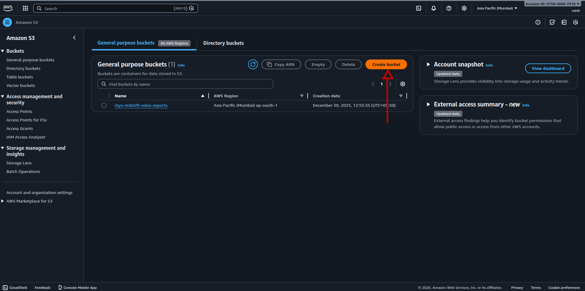
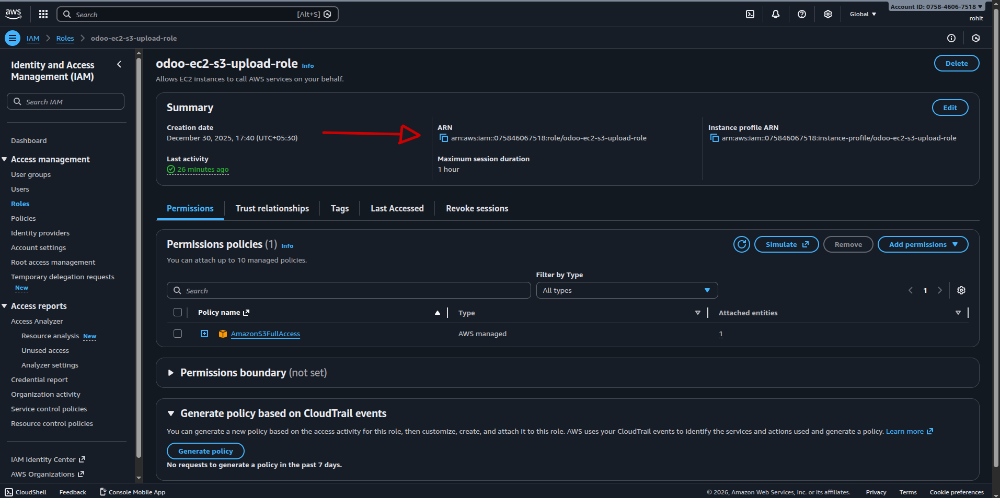
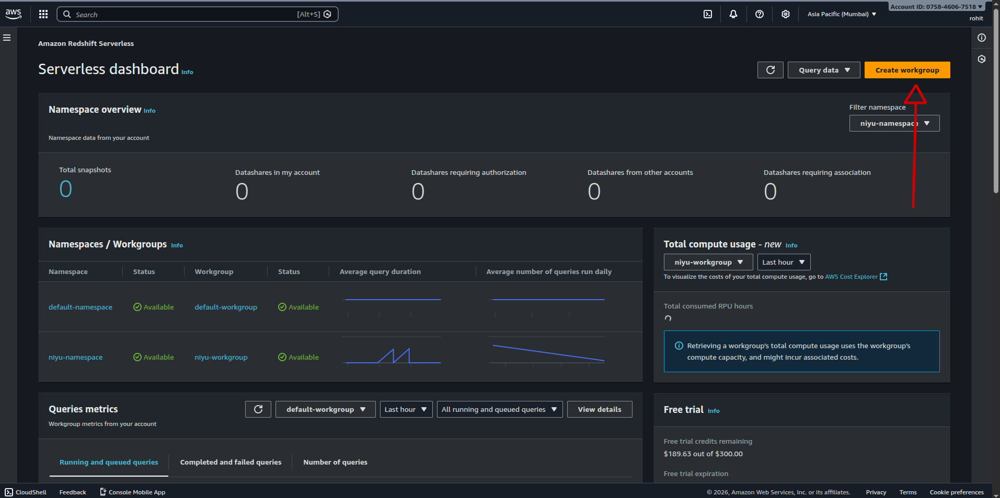
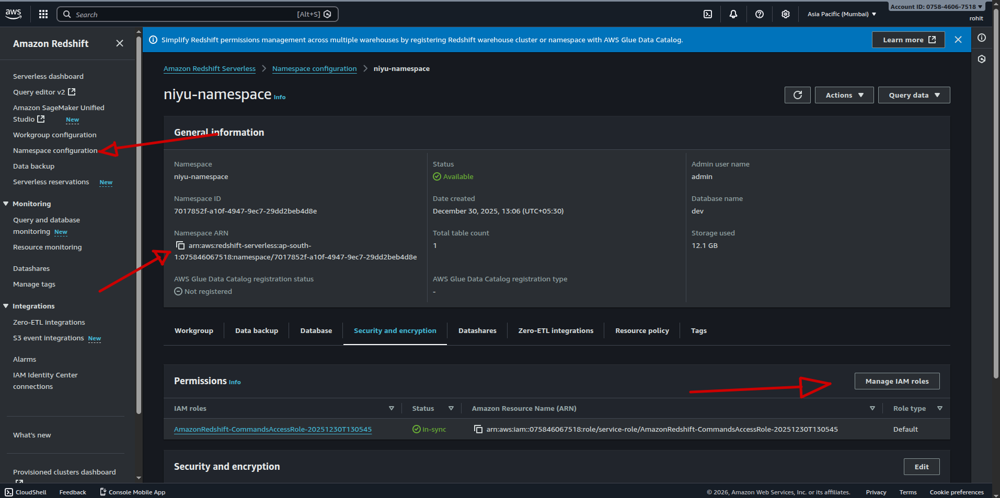
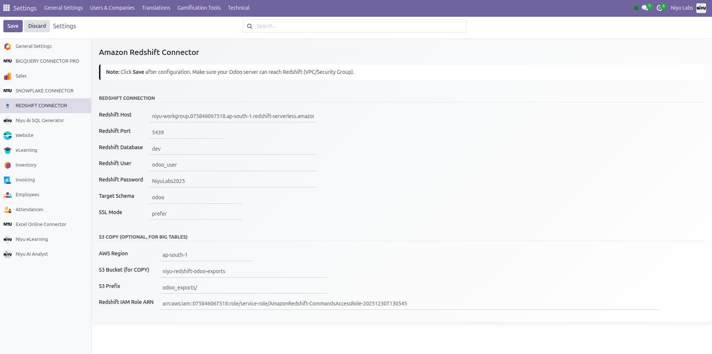
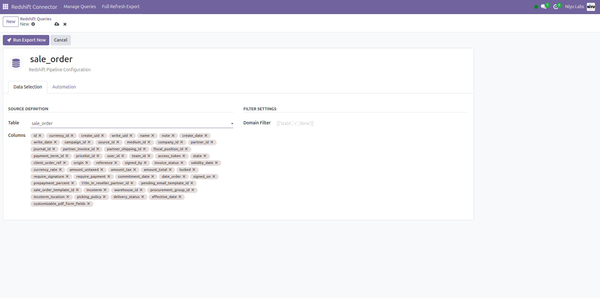
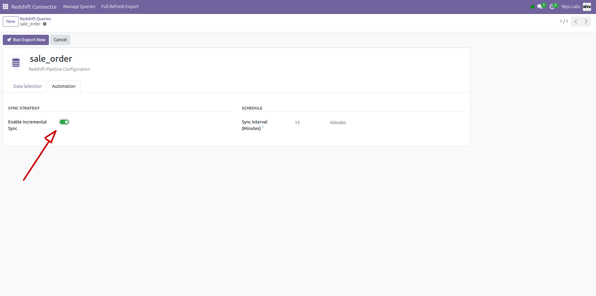
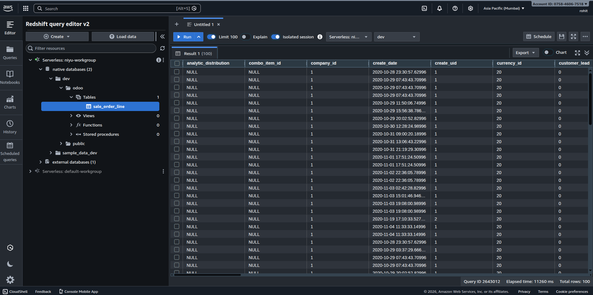
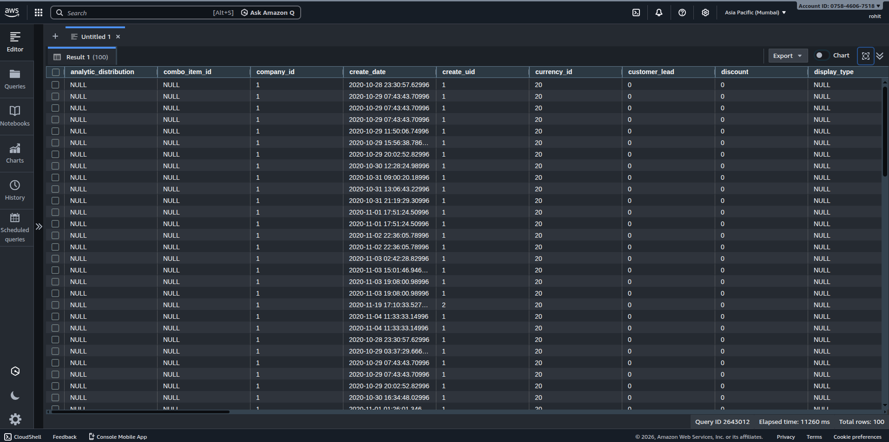

<!-- Bootstrap Utilities -->
<link rel="stylesheet" href="https://cdn.jsdelivr.net/npm/bootstrap@5.3.3/dist/css/bootstrap.min.css">

<!-- MAIN CONTAINER -->
<section style="
  background-color: #ffffff; 
  color: #1e293b; 
  font-family: 'Inter', -apple-system, BlinkMacSystemFont, 'Segoe UI', Roboto, sans-serif;
  line-height: 1.6; 
  margin: 0; 
  padding: 0;
  letter-spacing: -0.01em;
">

  <!-- HERO SECTION -->
  <header style="padding: 120px 20px 80px 20px; text-align: center; background: radial-gradient(circle at 50% -20%, rgba(79, 70, 229, 0.06), transparent 50%);">
    <div style="max-width: 1100px; margin: 0 auto;">
      <h1 style="font-size: clamp(3.2rem, 8vw, 5rem); line-height: 1.05; font-weight: 900; letter-spacing: -0.04em; margin: 0 0 28px 0; color: #0f172a;"> 
        <span style="background: linear-gradient(135deg, #0284c7 0%, #4f46e5 100%); -webkit-background-clip: text; -webkit-text-fill-color: transparent;">Amazon Redshift</span> Connector
      </h1>
      
      <p style="font-size: 1.35rem; color: #475569; max-width: 900px; margin: 0 auto 50px; line-height: 1.7;">
        Export your Odoo data to <b>Amazon Redshift</b> using an <b>S3 bucket</b> pipeline. Get fast analytics, dashboards, and BI reporting.
        <br>
        <span style="color: #0f172a; font-weight: 700;">Odoo runs operations</span> &#8212; <span style="color: #4f46e5; font-weight: 700;">Redshift runs analytics</span>.
      </p>

      <div class="d-flex flex-wrap justify-content-center gap-3 mb-5">
        <span style="background-color: #f0f9ff; color: #0369a1; padding: 12px 28px; border-radius: 100px; font-weight: 700; font-size: 14px; border: 1px solid #e0f2fe; box-shadow: 0 2px 4px rgba(0,0,0,0.02);">Incremental Sync</span>
        <span style="background-color: #f0fdf4; color: #15803d; padding: 12px 28px; border-radius: 100px; font-weight: 700; font-size: 14px; border: 1px solid #dcfce7; box-shadow: 0 2px 4px rgba(0,0,0,0.02);">S3 &#8594; COPY &#8594; MERGE</span>
        <span style="background-color: #f8fafc; color: #334155; padding: 12px 28px; border-radius: 100px; font-weight: 700; font-size: 14px; border: 1px solid #f1f5f9; box-shadow: 0 2px 4px rgba(0,0,0,0.02);">Auto Create Tables</span>
        <span style="background-color: #f8fafc; color: #64748b; padding: 12px 28px; border-radius: 100px; font-weight: 700; font-size: 14px; border: 1px solid #f1f5f9; box-shadow: 0 2px 4px rgba(0,0,0,0.02);">Auto Schedule</span>
      </div>

      <div style="background-color: #ffffff; border: 1px solid #f1f5f9; border-radius: 32px; padding: 45px; max-width: 920px; margin: 0 auto; box-shadow: 0 25px 50px -12px rgba(0,0,0,0.08);">
        <h5 style="font-weight: 800; color: #0f172a; margin-bottom: 18px; display: flex; align-items: center; justify-content: center; gap: 10px;">
          <span style="font-size: 24px;">✅</span> Super Simple Example
        </h5>
        <p style="margin: 0; font-size: 1.15rem; color: #475569; line-height: 1.8;">
          Export <b>Sales Orders</b> from Odoo &#8594; the connector uploads a <b>CSV.GZ</b> to <b>S3</b> &#8594; Redshift <b>COPY</b> loads it &#8594;
          you open <b>Redshift Query Editor</b> and run <b>SELECT</b> to see the table.
        </p>
      </div>

      <div style="margin-top: 35px; font-size: 15px; color: #94a3b8; font-weight: 500;">
        Works with: <span style="color: #475569;"><b>Amazon Redshift Serverless</b> (Workgroup/Namespace) and classic Redshift clusters.</span>
      </div>
    </div>
  </header>

  <!-- QUICK NAV -->
  <nav style="position: sticky; top: 0; z-index: 1000; background-color: rgba(255,255,255,0.8); backdrop-filter: blur(12px); border-bottom: 1px solid #f1f5f9; padding: 18px 0;">
    <div class="container d-flex justify-content-center gap-4 flex-wrap">
      <a href="#benefits" style="text-decoration: none; color: #64748b; font-weight: 700; font-size: 13px; text-transform: uppercase; letter-spacing: 0.05em;">Benefits</a>
      <a href="#how" style="text-decoration: none; color: #64748b; font-weight: 700; font-size: 13px; text-transform: uppercase; letter-spacing: 0.05em;">How it Works</a>
      <a href="#aws" style="text-decoration: none; color: #64748b; font-weight: 700; font-size: 13px; text-transform: uppercase; letter-spacing: 0.05em;">AWS Setup</a>
      <a href="#redshift" style="text-decoration: none; color: #64748b; font-weight: 700; font-size: 13px; text-transform: uppercase; letter-spacing: 0.05em;">Redshift Setup</a>
      <a href="#odoo" style="text-decoration: none; color: #64748b; font-weight: 700; font-size: 13px; text-transform: uppercase; letter-spacing: 0.05em;">Odoo Setup</a>
      <a href="#export" style="text-decoration: none; color: #64748b; font-weight: 700; font-size: 13px; text-transform: uppercase; letter-spacing: 0.05em;">Create Export</a>
      <a href="#verify" style="text-decoration: none; color: #64748b; font-weight: 700; font-size: 13px; text-transform: uppercase; letter-spacing: 0.05em;">Verify</a>
      <a href="#autosync" style="text-decoration: none; color: #64748b; font-weight: 700; font-size: 13px; text-transform: uppercase; letter-spacing: 0.05em;">Auto Sync</a>
      <a href="#security" style="text-decoration: none; color: #64748b; font-weight: 700; font-size: 13px; text-transform: uppercase; letter-spacing: 0.05em;">Security</a>
      <a href="#troubleshoot" style="text-decoration: none; color: #ef4444; font-weight: 800; font-size: 13px; text-transform: uppercase; letter-spacing: 0.05em;">Fix Problems</a>
    </div>
  </nav>

  <!-- BENEFITS -->
  <section id="benefits" style="padding: 100px 0;">
    <div class="container">
      <div class="text-center mb-5">
        <h2 style="font-size: 42px; font-weight: 900; color: #0f172a; margin-bottom: 20px;">What does this connector do?</h2>
        <p style="color: #64748b; font-size: 1.2rem; max-width: 800px; margin: 0 auto;">
          It connects <b>Odoo &#8594; S3 &#8594; Amazon Redshift</b> so your Odoo data becomes analytics-ready tables in Redshift.
        </p>
      </div>

      <div class="row g-4">
        <div class="col-md-6">
          <div style="background-color: #ffffff; border: 1px solid #f1f5f9; border-radius: 28px; padding: 45px; height: 100%; box-shadow: 0 4px 6px -1px rgba(0,0,0,0.02), 0 2px 4px -1px rgba(0,0,0,0.01);">
            <div style="font-size: 32px; margin-bottom: 20px;">🚀</div>
            <h4 style="font-weight: 800; margin-bottom: 16px; color: #0f172a;">Export Any Model</h4>
            <p style="color: #475569; margin-bottom: 12px; font-size: 1.05rem;">Export any Odoo model (standard or custom), for example:</p>
            <ul style="color: #475569; margin-bottom: 0; padding-left: 20px;">
              <li style="margin-bottom: 8px;">Sales Orders, Invoices, Customers</li>
              <li style="margin-bottom: 8px;">Products, Inventory, Purchase</li>
              <li>Custom models from your modules</li>
            </ul>
          </div>
        </div>

        <div class="col-md-6">
          <div style="background-color: #ffffff; border: 1px solid #f1f5f9; border-radius: 28px; padding: 45px; height: 100%; box-shadow: 0 4px 6px -1px rgba(0,0,0,0.02), 0 2px 4px -1px rgba(0,0,0,0.01);">
            <div style="font-size: 32px; margin-bottom: 20px;">🔄</div>
            <h4 style="font-weight: 800; margin-bottom: 16px; color: #0f172a;">Incremental (New + Changed)</h4>
            <p style="color: #475569; margin-bottom: 0; line-height: 1.7; font-size: 1.05rem;">
              It exports only new rows and updated rows using a cursor (like <code>write_date</code> + <code>id</code>).
              This saves time, cost, and avoids duplicate rows.
            </p>
          </div>
        </div>

        <div class="col-md-6">
          <div style="background-color: #ffffff; border: 1px solid #f1f5f9; border-radius: 28px; padding: 45px; height: 100%; box-shadow: 0 4px 6px -1px rgba(0,0,0,0.02), 0 2px 4px -1px rgba(0,0,0,0.01);">
            <div style="font-size: 32px; margin-bottom: 20px;">⚡</div>
            <h4 style="font-weight: 800; margin-bottom: 16px; color: #0f172a;">Fast Loading with S3 COPY</h4>
            <p style="color: #475569; margin-bottom: 0; line-height: 1.7; font-size: 1.05rem;">
              Instead of slow row-by-row inserts, it uploads a compressed CSV to S3 and uses Redshift <b>COPY</b>
              for high-speed ingestion.
            </p>
          </div>
        </div>

        <div class="col-md-6">
          <div style="background-color: #ffffff; border: 1px solid #f1f5f9; border-radius: 28px; padding: 45px; height: 100%; box-shadow: 0 4px 6px -1px rgba(0,0,0,0.02), 0 2px 4px -1px rgba(0,0,0,0.01);">
            <div style="font-size: 32px; margin-bottom: 20px;">🕒</div>
            <h4 style="font-weight: 800; margin-bottom: 16px; color: #0f172a;">Auto Export (Schedule)</h4>
            <p style="color: #475569; margin-bottom: 0; line-height: 1.7; font-size: 1.05rem;">
              Enable Auto Export and choose an interval. The connector resumes from the last cursor.
              It runs in batches and stops safely when the time limit is reached.
            </p>
          </div>
        </div>
      </div>

      <div style="margin-top: 50px; padding: 40px; background-color: #fffbeb; border-radius: 28px; border: 1px solid #fef3c7; display: flex; align-items: flex-start; gap: 20px;">
        <span style="font-size: 24px;">💡</span>
        <div>
          <h5 style="font-weight: 800; color: #92400e; margin-bottom: 8px;">Why Redshift?</h5>
          <p style="margin: 0; color: #b45309; font-size: 1.1rem;">
            Redshift is built for analytics at scale. Use it for BI dashboards, finance reporting, cohort analysis, and large joins that are slow in OLTP databases.
          </p>
        </div>
      </div>
    </div>
  </section>

  <!-- HOW IT WORKS -->
  <section id="how" style="padding: 100px 0; background-color: #f8fafc; border-top: 1px solid #f1f5f9; border-bottom: 1px solid #f1f5f9;">
    <div class="container">
      <div class="text-center mb-5">
        <h2 style="font-size: 42px; font-weight: 900; color: #0f172a; margin-bottom: 15px;">How it works</h2>
        <p style="color: #64748b; font-size: 1.15rem;">No manual SQL needed. The connector handles staging, COPY, and MERGE.</p>
      </div>

      <div class="row g-4 text-center mb-5">
        <div class="col-md-3">
          <div style="background: #ffffff; padding: 40px 20px; border-radius: 24px; border: 1px solid #f1f5f9; box-shadow: 0 10px 15px -3px rgba(0,0,0,0.04);">
            <div style="font-size: 48px; margin-bottom: 15px;">📤</div>
            <h6 style="font-weight: 800; color: #0f172a; font-size: 1.1rem; margin-bottom: 10px;">1) Upload to S3</h6>
            <p class="small text-muted px-2">Odoo creates CSV.GZ and uploads to your bucket</p>
          </div>
        </div>
        <div class="col-md-3">
          <div style="background: #ffffff; padding: 40px 20px; border-radius: 24px; border: 1px solid #f1f5f9; box-shadow: 0 10px 15px -3px rgba(0,0,0,0.04);">
            <div style="font-size: 48px; margin-bottom: 15px;">📥</div>
            <h6 style="font-weight: 800; color: #0f172a; font-size: 1.1rem; margin-bottom: 10px;">2) COPY to staging</h6>
            <p class="small text-muted px-2">Redshift reads that S3 file using an IAM Role</p>
          </div>
        </div>
        <div class="col-md-3">
          <div style="background: #ffffff; padding: 40px 20px; border-radius: 24px; border: 1px solid #f1f5f9; box-shadow: 0 10px 15px -3px rgba(0,0,0,0.04);">
            <div style="font-size: 48px; margin-bottom: 15px;">🔄</div>
            <h6 style="font-weight: 800; color: #0f172a; font-size: 1.1rem; margin-bottom: 10px;">3) MERGE to final</h6>
            <p class="small text-muted px-2">Updates existing rows and inserts new rows</p>
          </div>
        </div>
        <div class="col-md-3">
          <div style="background: #ffffff; padding: 40px 20px; border-radius: 24px; border: 1px solid #f1f5f9; box-shadow: 0 10px 15px -3px rgba(0,0,0,0.04);">
            <div style="font-size: 48px; margin-bottom: 15px;">✨</div>
            <h6 style="font-weight: 800; color: #0f172a; font-size: 1.1rem; margin-bottom: 10px;">4) Cleanup + Cursor</h6>
            <p class="small text-muted px-2">Drops staging & saves last_sync/last_id for next run</p>
          </div>
        </div>
      </div>

      <div class="row g-4">
        <div class="col-md-6">
          <div style="background-color: #ffffff; padding: 40px; border-radius: 28px; border: 1px solid #f1f5f9; height: 100%;">
            <h6 style="font-weight: 800; margin-bottom: 15px; font-size: 1.1rem; color: #0f172a;">Where is the data stored?</h6>
            <ul style="color: #475569; padding-left: 1.5rem; margin-bottom: 0; line-height: 1.8;">
              <li><b>Final analytics table</b> is in <b>Redshift</b> (Query Editor shows it).</li>
              <li><b>S3 files</b> are usually <b>temporary</b> (optional keep/delete).</li>
              <li>Staging tables exist only during load, then are dropped.</li>
            </ul>
          </div>
        </div>
        <div class="col-md-6">
          <div style="background-color: #ffffff; padding: 40px; border-radius: 28px; border: 1px solid #f1f5f9; height: 100%;">
            <h6 style="font-weight: 800; margin-bottom: 15px; font-size: 1.1rem; color: #0f172a;">Why you may not see files in S3?</h6>
            <p style="color: #475569; margin-bottom: 0; line-height: 1.8;">
              By default, many setups delete S3 files after COPY to reduce storage and keep data private.
              If you want to keep them, enable a &#8220;Keep S3 files&#8221; option (or ask your admin to disable auto-delete).
            </p>
          </div>
        </div>
      </div>

      <div style="margin-top: 35px; padding: 20px 25px; background-color: #f0f9ff; border-radius: 16px; border: 1px solid #bae6fd; display: flex; align-items: center; gap: 15px;">
        <span style="font-weight: 800; color: #0369a1; text-transform: uppercase; font-size: 12px; letter-spacing: 0.1em; background: #ffffff; padding: 4px 10px; border-radius: 6px; border: 1px solid #bae6fd;">Pro Tip</span>
        <div style="color: #0369a1; font-weight: 600;">
          Test first with a smaller model like <code>res.partner</code> or <code>product.product</code>, then move to large tables.
        </div>
      </div>
    </div>
  </section>

  <!-- AWS SETUP -->
  <section id="aws" style="padding: 100px 0;">
    <div class="container">
      <div style="display: flex; align-items: center; gap: 10px; margin-bottom: 15px;">
        <div style="width: 40px; height: 2px; background-color: #0ea5e9;"></div>
        <span style="color: #0ea5e9; font-weight: 800; font-size: 14px; text-transform: uppercase; letter-spacing: 0.15em;">Phase One</span>
      </div>
      <h2 style="font-size: 42px; font-weight: 900; margin-bottom: 20px; color: #0f172a;">Step 1: Create S3 Bucket + IAM Permissions</h2>
      <p style="font-size: 1.2rem; color: #475569; margin-bottom: 45px; max-width: 800px;">
        You need an S3 bucket where Odoo uploads batches, and an IAM Role so Redshift can read those files for COPY.
      </p>

      <div class="row g-4">
        <div class="col-lg-6">
          <div style="background-color: #f8fafc; border: 1px solid #f1f5f9; border-radius: 28px; padding: 40px; height: 100%;">
            <h5 style="font-weight: 800; margin-bottom: 20px; color: #0284c7;">1A) Create an S3 bucket</h5>
            <ol style="color: #475569; padding-left: 1.2rem; line-height: 2;">
              <li>Open AWS Console &#8594; search <b>S3</b></li>
              <li>Click <b>Create bucket</b></li>
              <li>Choose a name (example: <code>niyu-redshift-odoo-exports</code>)</li>
              <li>Pick a region (example: <code>ap-south-1</code>)</li>
              <li>Keep <b>Block all public access</b> = ON</li>
              <li>Create bucket</li>
            </ol>

            <div style="margin-top: 25px; padding: 18px; border-radius: 16px; border: 1px dashed #cbd5e1; background: #ffffff;">
              <div style="font-weight: 800; color: #0f172a; margin-bottom: 5px;">📍 Where to find your bucket later?</div>
              <div class="small text-muted">AWS Console &#8594; S3 &#8594; Buckets &#8594; click your bucket name</div>
            </div>
          </div>
        </div>

        <div class="col-lg-6">
          <div style="background-color: #f8fafc; border: 1px solid #f1f5f9; border-radius: 28px; padding: 40px; height: 100%;">
            <h5 style="font-weight: 800; margin-bottom: 20px; color: #0284c7;">1B) Create IAM Role for Redshift COPY</h5>
            <ol style="color: #475569; padding-left: 1.2rem; line-height: 2;">
              <li>AWS Console &#8594; search <b>IAM</b> &#8594; <b>Roles</b></li>
              <li>Click <b>Create role</b></li>
              <li>Trusted entity: <b>AWS service</b></li>
              <li>Use case: select <b>Redshift</b> (or Redshift Serverless)</li>
              <li>Attach policy: allow <b>s3:GetObject</b> on your bucket prefix</li>
              <li>Create role and copy its <b>Role ARN</b></li>
            </ol>

            <div style="margin-top: 25px; padding: 18px; border-radius: 16px; border: 1px dashed #cbd5e1; background: #ffffff;">
              <div style="font-weight: 800; color: #0f172a; margin-bottom: 5px;">📍 Where to find Role ARN?</div>
              <div class="small text-muted">AWS Console &#8594; IAM &#8594; Roles &#8594; click role &#8594; copy <b>ARN</b> from Summary</div>
            </div>
          </div>
        </div>
      </div>

      <!-- Screenshots -->
      <div class="row g-4 mt-5">
        <div class="col-12 text-center">
          <p style="font-weight: 800; color: #94a3b8; font-size: 13px; margin-bottom: 20px; text-transform: uppercase;">📸 Reference: Bucket & ARN Configuration</p>
          
          
        </div>
      </div>

      <!-- Minimal Policies -->
      <div style="margin-top: 60px; padding: 50px; background-color: #0f172a; color: #f8fafc; border-radius: 40px; box-shadow: 0 20px 40px rgba(15,23,42,0.1);">
        <h5 style="font-weight: 800; color: #38bdf8; margin-bottom: 15px; font-size: 1.5rem;">Required IAM Permissions (JSON)</h5>
        <p style="color: #94a3b8; margin-bottom: 35px;">
          You normally need <b>two permission sets</b>:
          <b>(1) Odoo uploader</b> to write files to S3,
          and <b>(2) Redshift COPY role</b> to read files from S3.
        </p>

        <div class="row g-4">
          <div class="col-lg-6">
            <div style="background: rgba(255,255,255,0.05); padding: 25px; border-radius: 20px; border: 1px solid rgba(255,255,255,0.1);">
              <div style="font-weight: 800; color: #38bdf8; margin-bottom: 15px; font-size: 0.9rem;">(A) Odoo uploader policy (PutObject)</div>
              <pre style="margin:0; white-space: pre-wrap; font-size: 12px; line-height: 1.6; color: #cbd5e1; font-family: monospace;">{
  "Version": "2012-10-17",
  "Statement": [
    {
      "Sid": "ListBucketPrefix",
      "Effect": "Allow",
      "Action": ["s3:ListBucket"],
      "Resource": "arn:aws:s3:::YOUR_BUCKET_NAME",
      "Condition": {"StringLike": {"s3:prefix": ["odoo_exports/*"]}}
    },
    {
      "Sid": "WriteObjects",
      "Effect": "Allow",
      "Action": ["s3:PutObject", "s3:AbortMultipartUpload"],
      "Resource": "arn:aws:s3:::YOUR_BUCKET_NAME/odoo_exports/*"
    }
  ]
}</pre>
            </div>
          </div>

          <div class="col-lg-6">
            <div style="background: rgba(255,255,255,0.05); padding: 25px; border-radius: 20px; border: 1px solid rgba(255,255,255,0.1);">
              <div style="font-weight: 800; color: #38bdf8; margin-bottom: 15px; font-size: 0.9rem;">(B) Redshift COPY role policy (GetObject)</div>
              <pre style="margin:0; white-space: pre-wrap; font-size: 12px; line-height: 1.6; color: #cbd5e1; font-family: monospace;">{
  "Version": "2012-10-17",
  "Statement": [
    {
      "Sid": "ReadObjectsForCopy",
      "Effect": "Allow",
      "Action": ["s3:GetObject", "s3:GetObjectVersion"],
      "Resource": "arn:aws:s3:::YOUR_BUCKET_NAME/odoo_exports/*"
    },
    {
      "Sid": "ListBucketForCopy",
      "Effect": "Allow",
      "Action": ["s3:ListBucket"],
      "Resource": "arn:aws:s3:::YOUR_BUCKET_NAME",
      "Condition": {"StringLike": {"s3:prefix": ["odoo_exports/*"]}}
    }
  ]
}</pre>
            </div>
          </div>
        </div>

        <div style="margin-top: 25px; padding-top: 20px; border-top: 1px solid rgba(255,255,255,0.1); font-size: 14px; color: #64748b;">
          If you enable &#8220;Delete S3 file after COPY&#8221;, add <code>s3:DeleteObject</code> permission to the Odoo uploader policy.
        </div>
      </div>
    </div>
  </section>

  <!-- REDSHIFT SETUP -->
  <section id="redshift" style="padding: 100px 0; background-color: #f8fafc; border-top: 1px solid #f1f5f9;">
    <div class="container">
      <div style="display: flex; align-items: center; gap: 10px; margin-bottom: 15px;">
        <div style="width: 40px; height: 2px; background-color: #4f46e5;"></div>
        <span style="color: #4f46e5; font-weight: 800; font-size: 14px; text-transform: uppercase; letter-spacing: 0.15em;">Phase Two</span>
      </div>
      <h2 style="font-size: 42px; font-weight: 900; margin-bottom: 20px; color: #0f172a;">Step 2: Create Redshift (Serverless) + Get Host/Namespace</h2>
      <p style="font-size: 1.2rem; color: #475569; margin-bottom: 45px; max-width: 800px;">
        You will copy the <b>Workgroup endpoint (host)</b>, choose a <b>database name</b>, and ensure the IAM Role is associated so COPY can read from S3.
      </p>

      <div class="row g-4">
        <div class="col-lg-6">
          <div style="background-color: #ffffff; border: 1px solid #f1f5f9; border-radius: 28px; padding: 40px; height: 100%; box-shadow: 0 4px 6px rgba(0,0,0,0.02);">
            <h5 style="font-weight: 800; margin-bottom: 20px; color: #4338ca;">2A) Create Redshift Serverless</h5>
            <ol style="color: #475569; padding-left: 1.2rem; line-height: 2;">
              <li>AWS Console &#8594; search <b>Amazon Redshift</b></li>
              <li>Choose <b>Redshift Serverless</b></li>
              <li>Create <b>Namespace</b> and <b>Workgroup</b></li>
              <li>Set admin user/password (or use existing)</li>
              <li>Ensure network allows connection (VPC / security group)</li>
            </ol>

            <div style="margin-top: 25px; padding: 20px; border-radius: 16px; border: 1px solid #e2e8f0; background: #f8fafc;">
              <div style="font-weight: 800; color: #0f172a; margin-bottom: 4px; font-size: 14px;">Meaning of words</div>
              <div class="small text-muted" style="line-height: 1.6;">
                <b>Namespace:</b> logical container for databases & users<br>
                <b>Workgroup:</b> compute + endpoint you connect to (host)
              </div>
            </div>
          </div>
        </div>

        <div class="col-lg-6">
          <div style="background-color: #ffffff; border: 1px solid #f1f5f9; border-radius: 28px; padding: 40px; height: 100%; box-shadow: 0 4px 6px rgba(0,0,0,0.02);">
            <h5 style="font-weight: 800; margin-bottom: 20px; color: #4338ca;">2B) Host & Database Details</h5>
            <ul style="color: #475569; padding-left: 1.2rem; line-height: 2; list-style-type: disc;">
              <li><b>Host (endpoint):</b> Console &#8594; Serverless &#8594; <b>Workgroups</b> &#8594; click workgroup &#8594; copy <b>Endpoint</b></li>
              <li><b>Database name:</b> often <code>dev</code> by default</li>
              <li><b>Port:</b> typically <code>5439</code></li>
              <li><b>Username/Password:</b> from your Redshift admin</li>
            </ul>

            <div style="margin-top: 25px; padding: 20px; border-radius: 16px; border: 1px solid #e2e8f0; background: #f8fafc;">
              <div style="font-weight: 800; color: #0f172a; margin-bottom: 4px; font-size: 14px;">Example host format</div>
              <code style="font-size: 11px; color: #64748b; word-break: break-all;">your-workgroup-id.account-id.region.redshift-serverless.amazonaws.com</code>
            </div>
          </div>
        </div>
      </div>

      <div style="margin-top: 30px; padding: 25px; background-color: #fff7ed; border-radius: 20px; border: 1px solid #fed7aa; display: flex; align-items: flex-start; gap: 15px;">
        <span style="font-size: 20px;">⚠️</span>
        <div>
          <div style="font-weight: 800; color: #9a3412; margin-bottom: 4px;">Important: Associate IAM Role with Workgroup</div>
          <div style="color: #9a3412; font-size: 0.95rem;">
            If COPY fails with &#8220;role is not associated&#8221;, go to:
            <b>Redshift Serverless &#8594; Workgroup &#8594; Permissions / IAM roles</b> and attach the same Role ARN you use for COPY.
          </div>
        </div>
      </div>

      <!-- Screenshots -->
      <div class="row g-4 mt-5">
        <div class="col-12 text-center">
          
          
        </div>
      </div>
    </div>
  </section>

  <!-- ODOO SETUP -->
  <section id="odoo" style="padding: 100px 0;">
    <div class="container">
      <div style="display: flex; align-items: center; gap: 10px; margin-bottom: 15px;">
        <div style="width: 40px; height: 2px; background-color: #10b981;"></div>
        <span style="color: #10b981; font-weight: 800; font-size: 14px; text-transform: uppercase; letter-spacing: 0.15em;">Phase Three</span>
      </div>
      <h2 style="font-size: 42px; font-weight: 900; margin-bottom: 20px; color: #0f172a;">Step 3: Configure the Connector in Odoo</h2>
      <p style="font-size: 1.2rem; color: #475569; margin-bottom: 45px; max-width: 800px;">
        Go to: <b>Settings &#8594; Amazon Redshift Connector</b>. Fill Redshift + S3 settings.
      </p>

      <div class="row g-4">
        <div class="col-lg-6">
          <div style="background-color: #f8fafc; border: 1px solid #f1f5f9; border-radius: 28px; padding: 40px; height: 100%;">
            <h5 style="font-weight: 800; margin-bottom: 25px; color: #059669;">Redshift Database Configuration</h5>
            <ul style="list-style: none; padding-left: 0; margin-bottom: 0; color: #475569;">
              <li style="margin-bottom: 14px; border-bottom: 1px solid #e2e8f0; padding-bottom: 8px;">&#8226; <b>Host:</b> Workgroup endpoint</li>
              <li style="margin-bottom: 14px; border-bottom: 1px solid #e2e8f0; padding-bottom: 8px;">&#8226; <b>Port:</b> 5439</li>
              <li style="margin-bottom: 14px; border-bottom: 1px solid #e2e8f0; padding-bottom: 8px;">&#8226; <b>Database:</b> e.g. <code>dev</code></li>
              <li style="margin-bottom: 14px; border-bottom: 1px solid #e2e8f0; padding-bottom: 8px;">&#8226; <b>User / Password:</b> Redshift DB user</li>
              <li style="margin-bottom: 14px; border-bottom: 1px solid #e2e8f0; padding-bottom: 8px;">&#8226; <b>Schema:</b> e.g. <code>odoo</code></li>
              <li>&#8226; <b>COPY IAM Role ARN:</b> Role that can read S3</li>
            </ul>
          </div>
        </div>

        <div class="col-lg-6">
          <div style="background-color: #f8fafc; border: 1px solid #f1f5f9; border-radius: 28px; padding: 40px; height: 100%;">
            <h5 style="font-weight: 800; margin-bottom: 25px; color: #059669;">S3 Storage Configuration</h5>
            <ul style="list-style: none; padding-left: 0; margin-bottom: 0; color: #475569;">
              <li style="margin-bottom: 14px; border-bottom: 1px solid #e2e8f0; padding-bottom: 8px;">&#8226; <b>Bucket:</b> Your bucket name</li>
              <li style="margin-bottom: 14px; border-bottom: 1px solid #e2e8f0; padding-bottom: 8px;">&#8226; <b>Region:</b> Same as bucket region</li>
              <li style="margin-bottom: 14px; border-bottom: 1px solid #e2e8f0; padding-bottom: 8px;">&#8226; <b>Prefix:</b> e.g. <code>odoo_exports/</code></li>
              <li style="margin-bottom: 14px; border-bottom: 1px solid #e2e8f0; padding-bottom: 8px;">&#8226; <b>Keep S3 files:</b> ON (Keep) / OFF (Auto-delete)</li>
              <li>&#8226; <b>Compression:</b> CSV.GZ (Recommended)</li>
            </ul>
          </div>
        </div>
      </div>

      <div style="margin-top: 40px; padding: 40px; background-color: #ffffff; border: 1px solid #f1f5f9; border-radius: 32px; box-shadow: 0 10px 30px rgba(0,0,0,0.03);">
        <h5 style="font-weight: 800; color: #0f172a; margin-bottom: 15px;">AWS credentials for S3 upload</h5>
        <p style="color: #64748b; margin-bottom: 30px;">Odoo must be able to upload the CSV to S3. Choose ONE method:</p>
        <div class="row g-4">
          <div class="col-lg-6">
            <div style="background:#f8fafc; border-radius: 20px; padding: 25px; border: 1px solid #f1f5f9; height: 100%;">
              <div style="font-weight: 800; color: #10b981; margin-bottom: 10px;">Option A (Secure): Instance Role</div>
              <div class="small text-muted" style="line-height: 1.6;">
                If Odoo runs on EC2, attach an <b>IAM Role</b> to the EC2 instance. No access keys stored in Odoo.
              </div>
            </div>
          </div>
          <div class="col-lg-6">
            <div style="background:#f8fafc; border-radius: 20px; padding: 25px; border: 1px solid #f1f5f9; height: 100%;">
              <div style="font-weight: 800; color: #10b981; margin-bottom: 10px;">Option B: Access Keys</div>
              <div class="small text-muted" style="line-height: 1.6;">
                Provide <b>AWS_ACCESS_KEY_ID</b> and <b>AWS_SECRET_ACCESS_KEY</b> (best via server env vars).
              </div>
            </div>
          </div>
        </div>
      </div>

      <!-- Screenshot -->
      <div style="margin: 50px 0 0; text-align: center;">
        <p style="font-weight: 800; color: #94a3b8; font-size: 13px; margin-bottom: 20px; text-transform: uppercase;">📸 Reference: Odoo Configuration View</p>
        
      </div>
    </div>
  </section>

  <!-- CREATE EXPORT -->
  <section id="export" style="padding: 100px 0; background-color: #f8fafc; border-top: 1px solid #f1f5f9;">
    <div class="container text-center">
      <h2 style="font-size: 42px; font-weight: 900; margin-bottom: 20px; color: #0f172a;">Step 4: Create an Export in Odoo</h2>
      <p style="color: #64748b; font-size: 1.2rem; max-width: 800px; margin: 0 auto 50px;">
        Pick your model, select fields, and define your sync logic.
      </p>

      <div style="background-color: #ffffff; border: 1px solid #f1f5f9; border-radius: 32px; padding: 50px; text-align: left; box-shadow: 0 4px 6px rgba(0,0,0,0.02);">
        <h5 style="font-weight: 800; margin-bottom: 20px; color: #0f172a;">What is an Export?</h5>
        <p style="color: #475569; margin-bottom: 35px; line-height: 1.8; font-size: 1.1rem;">
          An Export is a saved &#8220;sync definition&#8221; (table name + model + fields + filter + schedule).
          You can create many exports (Sales Orders, Invoices, Customers, etc.).
        </p>

        <div class="row g-5">
          <div class="col-lg-6">
            <h6 style="font-weight: 800; color: #0284c7; margin-bottom: 15px;">Configuration Fields:</h6>
            <ul style="list-style: none; padding-left: 0; color: #475569;">
              <li style="margin-bottom: 12px;">&#8226; <b>Export Name:</b> Redshift table name</li>
              <li style="margin-bottom: 12px;">&#8226; <b>Odoo Model:</b> Which model you export</li>
              <li style="margin-bottom: 12px;">&#8226; <b>Columns:</b> Select fields to sync</li>
              <li style="margin-bottom: 12px;">&#8226; <b>Domain Filter:</b> Filter specific records</li>
              <li style="margin-bottom: 12px;">&#8226; <b>Batch Size:</b> e.g., 50,000 rows</li>
              <li>&#8226; <b>Time Limit:</b> Stop safely and resume</li>
            </ul>
          </div>
          <div class="col-lg-6">
            <h6 style="font-weight: 800; color: #0284c7; margin-bottom: 15px;">Domain Filter Examples:</h6>
            <div style="background: #f1f5f9; padding: 18px; border-radius: 12px; margin-bottom: 15px;">
              <code style="color: #475569; font-size: 13px;">[('state','=','sale')]</code>
              <div class="small text-muted mt-1">Export only confirmed Sales Orders</div>
            </div>
            <div style="background: #f1f5f9; padding: 18px; border-radius: 12px;">
              <code style="color: #475569; font-size: 13px;">[('amount_total','&gt;',1000)]</code>
              <div class="small text-muted mt-1">Export only orders above 1,000</div>
            </div>
          </div>
        </div>
      </div>

      <div class="row g-4 mt-5">
        <div class="col-12">
          
          
        </div>
      </div>
    </div>
  </section>

  <!-- VERIFY IN QUERY EDITOR -->
  <section id="verify" style="padding: 100px 0;">
    <div class="container text-center">
      <h2 style="font-size: 42px; font-weight: 900; margin-bottom: 20px; color: #0f172a;">Step 5: Check Data in Redshift</h2>
      <p style="color: #64748b; font-size: 1.2rem; max-width: 800px; margin: 0 auto 50px;">
        Once synced, your data is natively available in Redshift for high-speed queries.
      </p>

      <div style="background-color: #0f172a; border-radius: 32px; padding: 60px; text-align: left; color: #f8fafc; box-shadow: 0 20px 40px rgba(15,23,42,0.15);">
        <h5 style="font-weight: 800; margin-bottom: 25px; color: #38bdf8;">Querying your Odoo data</h5>
        <div style="background: rgba(255,255,255,0.05); padding: 30px; border-radius: 20px; border: 1px solid rgba(255,255,255,0.1); margin-bottom: 30px;">
          <code style="color: #cbd5e1; font-size: 15px; font-family: monospace; display: block; margin-bottom: 15px;">-- Verify row count</code>
          <code style="color: #ffffff; font-size: 18px; font-family: monospace; font-weight: 600;">SELECT COUNT(*) FROM odoo.sale_order;</code>
          <hr style="border-color: rgba(255,255,255,0.1); margin: 25px 0;">
          <code style="color: #cbd5e1; font-size: 15px; font-family: monospace; display: block; margin-bottom: 15px;">-- Preview data</code>
          <code style="color: #ffffff; font-size: 18px; font-family: monospace; font-weight: 600;">SELECT * FROM odoo.sale_order LIMIT 10;</code>
        </div>
        
        <div style="padding: 18px; border-radius: 12px; border: 1px solid rgba(56,189,248,0.2); background: rgba(56,189,248,0.05); color: #38bdf8; font-weight: 600;">
          📍 Tip: Your <b>Export Name</b> becomes the table name in Redshift.
        </div>
      </div>

      <div class="row g-4 mt-5">
        <div class="col-12">
          
          
        </div>
      </div>
    </div>
  </section>

  <!-- AUTO SYNC + TIME LIMIT -->
  <section id="autosync" style="padding: 100px 0; background-color: #f8fafc; border-top: 1px solid #f1f5f9;">
    <div class="container text-center">
      <h2 style="font-size: 42px; font-weight: 900; margin-bottom: 24px; color: #0f172a;">Auto Export & Safety Features</h2>
      <p style="color: #64748b; font-size: 1.2rem; max-width: 800px; margin: 0 auto 50px;">
        Designed for large-scale data without overwhelming your Odoo server.
      </p>

      <div class="row g-4 text-start">
        <div class="col-lg-6">
          <div style="background: #ffffff; padding: 40px; border-radius: 28px; border: 1px solid #f1f5f9; height: 100%;">
            <h5 style="font-weight: 800; color: #4f46e5; margin-bottom: 15px;">Batch & Resume Logic</h5>
            <p style="color: #475569; line-height: 1.8;">
              Every batch updates the <b>last_sync</b> and <b>last_id</b>. On the next run, it fetches only the next batch. 
              If the Odoo time limit is hit, it ends cleanly and resumes on the next scheduled cron job.
            </p>
          </div>
        </div>
        <div class="col-lg-6">
          <div style="background: #ffffff; padding: 40px; border-radius: 28px; border: 1px solid #f1f5f9; height: 100%;">
            <h5 style="font-weight: 800; color: #4f46e5; margin-bottom: 15px;">Optimized Settings</h5>
            <ul style="color: #475569; padding-left: 1.5rem; line-height: 1.8;">
              <li><b>Batch size:</b> 25,000 - 50,000 rows</li>
              <li><b>Time limit:</b> 60 - 120 seconds per run</li>
              <li><b>Auto export interval:</b> 10 - 30 minutes</li>
            </ul>
          </div>
        </div>
      </div>
    </div>
  </section>

  <!-- SECURITY -->
  <section id="security" style="padding: 100px 0;">
    <div class="container">
      <div class="text-center mb-5">
        <h2 style="font-size: 42px; font-weight: 900; color: #0f172a; margin-bottom: 15px;">Security Best Practices</h2>
        <p style="color: #64748b; font-size: 1.2rem;">Protecting your enterprise data pipeline.</p>
      </div>

      <div class="row g-4">
        <div class="col-md-6">
          <div style="background-color: #ffffff; border: 1px solid #f1f5f9; border-radius: 28px; padding: 45px; height: 100%; box-shadow: 0 4px 6px rgba(0,0,0,0.02);">
            <div style="font-size: 32px; margin-bottom: 15px;">🔒</div>
            <h5 style="font-weight: 800; color: #0f172a; margin-bottom: 15px;">Bucket Security</h5>
            <ul style="color: #475569; padding-left: 1.5rem; line-height: 1.8;">
              <li>Block all public access = ON</li>
              <li>Use specific prefixes (folders)</li>
              <li>Lifecycle rules to delete old files</li>
            </ul>
          </div>
        </div>
        <div class="col-md-6">
          <div style="background-color: #ffffff; border: 1px solid #f1f5f9; border-radius: 28px; padding: 45px; height: 100%; box-shadow: 0 4px 6px rgba(0,0,0,0.02);">
            <div style="font-size: 32px; margin-bottom: 15px;">🛡️</div>
            <h5 style="font-weight: 800; color: #0f172a; margin-bottom: 15px;">IAM Access Control</h5>
            <ul style="color: #475569; padding-left: 1.5rem; line-height: 1.8;">
              <li>Separate uploader & COPY roles</li>
              <li>Limit permissions to a single bucket</li>
              <li>Prefer EC2 Instance Roles over Access Keys</li>
            </ul>
          </div>
        </div>
      </div>
    </div>
  </section>

  <!-- TROUBLESHOOT -->
  <section id="troubleshoot" style="padding: 100px 0; background-color: #fff1f2; border-top: 1px solid #fecaca;">
    <div class="container">
      <div class="text-center mb-5">
        <h2 style="font-size: 42px; font-weight: 900; color: #9f1239; margin-bottom: 15px;">Fix Problems</h2>
        <p style="color: #be123c; font-size: 1.15rem;">Fast solutions for the most common setup issues.</p>
      </div>

      <div style="background-color: #ffffff; padding: 50px; border-radius: 32px; box-shadow: 0 10px 30px rgba(159,18,57,0.05); border: 1px solid #fecaca;">
        <div class="row g-4">
          <div class="col-lg-6">
            <div style="margin-bottom: 25px;">
              <h6 style="font-weight: 800; color: #9f1239;">1) NoCredentialsError</h6>
              <p class="small text-muted">Odoo can't find AWS keys. Check your Instance Role or Access Key settings.</p>
            </div>
            <div style="margin-bottom: 25px;">
              <h6 style="font-weight: 800; color: #9f1239;">2) Role is not associated</h6>
              <p class="small text-muted">The IAM Role must be attached to the Redshift Workgroup in the AWS Console.</p>
            </div>
          </div>
          <div class="col-lg-6">
            <div style="margin-bottom: 25px;">
              <h6 style="font-weight: 800; color: #9f1239;">3) S3 AccessDenied during COPY</h6>
              <p class="small text-muted">The Redshift role is missing <code>s3:GetObject</code> permissions for your bucket.</p>
            </div>
            <div style="margin-bottom: 25px;">
              <h6 style="font-weight: 800; color: #9f1239;">4) Connection timeout</h6>
              <p class="small text-muted">Check VPC Security Groups to ensure your Odoo server can reach Redshift's port 5439.</p>
            </div>
          </div>
        </div>
      </div>
    </div>
  </section>

  <!-- FAQ -->
  <section style="padding: 100px 0; background-color: #ffffff;">
    <div class="container text-center">
      <h2 style="font-size: 32px; font-weight: 900; color: #0f172a; margin-bottom: 40px;">Frequently Asked Questions</h2>
      <div class="row g-4">
        <div class="col-md-4">
          <div style="background-color: #f8fafc; padding: 35px; border-radius: 24px; height: 100%; border: 1px solid #f1f5f9;">
            <h6 style="font-weight: 800; color: #0f172a; margin-bottom: 10px;">Duplicate rows?</h6>
            <p class="small text-muted mb-0">No. We use a MERGE logic (Delete + Insert) to ensure each record is unique.</p>
          </div>
        </div>
        <div class="col-md-4">
          <div style="background-color: #f8fafc; padding: 35px; border-radius: 24px; height: 100%; border: 1px solid #f1f5f9;">
            <h6 style="font-weight: 800; color: #0f172a; margin-bottom: 10px;">SQL knowledge?</h6>
            <p class="small text-muted mb-0">None needed for the setup. The connector builds the tables and SQL scripts automatically.</p>
          </div>
        </div>
        <div class="col-md-4">
          <div style="background-color: #f8fafc; padding: 35px; border-radius: 24px; height: 100%; border: 1px solid #f1f5f9;">
            <h6 style="font-weight: 800; color: #0f172a; margin-bottom: 10px;">S3 Storage costs?</h6>
            <p class="small text-muted mb-0">Minimal. If you enable auto-delete, files are removed immediately after the sync completes.</p>
          </div>
        </div>
      </div>
    </div>
  </section>

  <!-- FOOTER -->
  <footer style="padding: 100px 0; border-top: 1px solid #f1f5f9; text-align: center; background: radial-gradient(circle at 50% 120%, rgba(79, 70, 229, 0.05), transparent 50%);">
    <div class="container">
      <div style="background-color: #0f172a; color: #ffffff; padding: 80px 40px; border-radius: 48px; box-shadow: 0 30px 60px -12px rgba(15,23,42,0.2);">
        <h2 style="font-size: 3.5rem; font-weight: 900; margin-bottom: 20px; letter-spacing: -0.04em;">Need Help?</h2>
        <p style="font-size: 1.25rem; color: #94a3b8; margin-bottom: 40px; max-width: 700px; margin-left: auto; margin-right: auto;">
          Our team can help with your AWS architecture, IAM permissions, and connector performance tuning.
        </p>
        <div class="d-flex justify-content-center gap-5 flex-wrap">
          <span style="font-size: 1.1rem; font-weight: 700;">&#128233; <a href="mailto:info@niyulabs.com" style="color: #38bdf8; text-decoration: none;">info@niyulabs.com</a></span>
          <span style="font-size: 1.1rem; font-weight: 700;">&#127760; <a href="https://niyulabs.com" style="color: #38bdf8; text-decoration: none;">niyulabs.com</a></span>
        </div>
      </div>
      <p style="margin-top: 60px; color: #94a3b8; font-weight: 600; font-size: 14px; text-transform: uppercase; letter-spacing: 0.1em;">
        Last updated: December 2025 | Version: 18.0.2.1.0 | Odoo 16 &#183; 17 &#183; 18
      </p>
    </div>
  </footer>

</section>